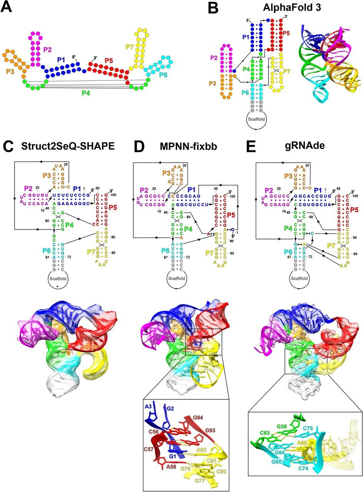
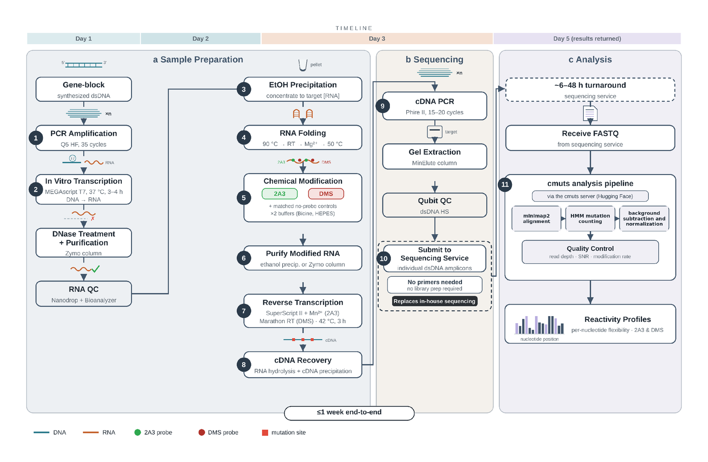

I'm an experimentalist who builds methods. RNA structure and function is my deep specialty, and I work fluently across in vitro, microbial, and mammalian systems, from molecular biology and biochemistry to imaging and high-throughput assays.
I design experiments that generate large, structured, analysis-ready datasets, and I run them as a closed loop: give a model a real design problem, build and measure its best candidates at the bench, and feed the results back into the next round. That loop is also how I find where models break. My goal is to build biological methods that generate data designed from the start to train AI models, and to use those models to engineer the biomolecules and therapeutics of the future.
Frontier language models and Eterna players receive the same pseudoknot-design challenge, with every design scored experimentally by chemical mapping rather than against another model — yielding an evaluation set and training data grounded in physical measurement.
OngoingDesigned mRNA constructs testing how long-range RNA architecture controls cap-dependent translation: a 3′ element base-pairing with the 5′UTR represses initiation ~8–9-fold by NanoLuc reporter assay, while a composition-matched scramble control shows only ~1.5-fold. No translation-efficiency model predicts this sequence-specific effect.
Manuscript in preparationChemical-mapping readouts produced by my method guided successive rounds of AI-designed pseudoknots, feeding structural ground truth back to the computational team between design cycles.
Published: Science (2026)
Developed a Nanopore-based RNA chemical mapping protocol that eliminates the need for sequencing infrastructure. Technology transferred to AI@HHMI for large-scale training data production. Public web server deployed. Invention disclosure under review by Stanford OTL.
Under review: Nature Protocols
First-author discovery that the PAN2-PAN3 deadenylase activity is selectively required for mitotic robustness under microtubule stress; demonstrated mechanism from yeast to human cells.
Under review: Genetics
Equal-contribution discovery that the autophagy-related protein Atg11 is required for high-fidelity chromosome segregation, revealing a non-canonical role at spindle pole bodies.
Published: PLOS Biology (2025)
cmuts.cmuts, a mutational-profiling pipeline scaling structure profiling beyond the transcriptome, using in vitro chemical probing (2A3, DMS).RNA structure-prediction models (EternaFold, RibonanzaNet, RNAfold); RNA foundation models (AIDO.RNA, CodonBERT); mRNA translation-efficiency models (Optimus 5-Prime, RiboNN, UTR-LM); mRNA stability and ribosome-profiling models (Saluki, RiboTIE); frontier LLM evaluation on biological design and reasoning tasks; designing benchmarks scored against experimental ground truth rather than against model predictions
FAST-MaP (inventor; public web server; Stanford OTL invention disclosure under review); assay design; probe/reagent optimization
Python (pandas, NumPy, SciPy, matplotlib, scikit-image); R/Bioconductor; SHAPE data analysis (ShapeMapper2, cmuts); biological databases (UniProt, GenBank, RNAcentral, Rfam, Ensembl, PDB, NCBI BLAST, GEO/SRA); reproducible analysis pipelines on GitHub
In vitro and in vivo chemical probing (2A3, DMS); IVT; mRNA translation-efficiency assays; biophysical RNA characterization (mass photometry, dynamic light scattering); RT-qPCR
CRISPR/Cas9; shRNA/siRNA; cloning; mutagenesis; flow cytometry; mammalian cell culture (HEK293A and other immortalized cell lines); yeast genetics and SGA screens
Illumina sequencing and library preparation; Oxford Nanopore long-read RNA sequencing; RNA-seq (mammalian and microbial)
Confocal microscopy; live-cell and time-lapse imaging; high-content screening; quantitative image analysis (ImageJ, ZEN)
Primer-less RNA chemical-mapping pipeline — DNA template to per-nucleotide reactivity in under a week, with a public web-based analysis server. No in-house sequencing infrastructure required. Stanford OTL invention disclosure under review.
Mutational-profiling pipeline scaling RNA structure profiling beyond the transcriptome, built by H.M. Blair. I generated the chemical-probing data used to validate it — web server · v2.0.0 release